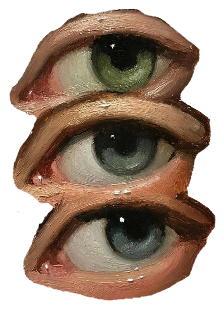
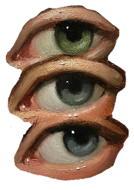

DH2002: Crowdsourcing Project
My minor field is the academic study of world religions, and so initially some time was spent to find a Zooniverse project that related, in anyway, to the this. However when that was unsuccessful, I decided on a project that was interesting to me personally. I found a project researching the development of speech in babies and infant children. The workload seemed simple enough but it was still engaging and, I believe, important, so I had no reservations about pursuing this as my project of reflection.
Upon starting the project, I was given a brief description of what makes a baby sound “canonical” vs “non canonical”. These terms are also explained, canonical meaning a sound that consists of a discreet vowel and constant, in any configuration. And non-canonical meaning sound that don’t fit that criteria. I would then be shown a one second clip of noise, recorded from the baby/child’s day, and to define first, if the baby was speaking or if it was something else (parent, background noise, unintelligible, or the like.), then the age of the child, and finally if the speech was canonical or not.

This was easy enough to grasp and I began quickly to work through all of these exercises. One part I found difficult was determining the child’s age. It was hard to tell if a baby was speaking or if it was an older child making some sort of non-canonical noise. Another issue I ran into was the occasional unidentifiable noise, I was sometimes given clips where the child was obviously playing around multiple children, and there was several voices all competing for dominance. In these situations, the instructions told us to decide on the loudest, but sometimes even that was hard to determine. And within that it was hard to determine if the sound was canonical or not through all the noise. In these situations, I found it useful to use a pair of headphones to really listen to the child speaking patterns before making a best case decision. I am grateful that these clips are each given to people multiple times because this is the best way of deciphering clips like these.
Implications of Your Contribution
One thing that struck me as I got deep into it was just how human it all felt. Here I was, trying to decode a seemingly chaotic jumble of noise, but in reality, it mirrored the way I communicate too. I could feel myself tapping into almost instinctual knowledge of what these children were trying to say. It made me feel more connected to the project, and more motivated to complete each prompt as best I could.
The project set out with many objectives, and interestingly, the contributions so far have already had an impact on its final goals. On its zooniverse page, the project now has two sets of goals. The initial mission statement from 2020, which outlined a general interest in the quantity of canonical sounds babies make as they grow, as well as the effects of complex vs simpler languages on this development. Then there are a newer set of questions, that the researchers are hoping to answer. These queries are much more specific than the previous goals, including questions like, “When do children match adults in the frequency with which they make complex sounds?” and “Does children’s speech development depend on how much speech they hear from those around them?”. These questions give us a hint as to what the researches are really interested in finding from this dataset, and personally, this only furthered my enthusiasm towards helping complete this project.
By doing this I am hoping that it can further our understanding of human speech development, particularly this could help enormously with healing speech disorders in people of all ages. Early identification and intervention are often associated with better long-term outcomes for any and all Speech therapy plans. Research like this is key to finding better and more effective treatments for all ages. Speech Therapy is most effective with early intervention, so identifying patterns in children who go on the develop speech disorders can allow doctors to intervene as soon as possible.
This can also be used to research language development in children with autism, or rather if there are any differences between children with autism and those without. This difference could tell us a lot about Autism and how it develops. Autism is a complex condition with a wide range of symptoms, and speech development is defiantly one of them.
Seeing how wide spread the uses for this kind of research are, it only makes sense that the best research be preformed. Human speech is a large and complex topic. Having the largest possible sample size makes sense when trying to identify patterns that effect not only different languages but different regions and cultures. This is a massive undertaking even for a large research group however and so it only makes sense to employ the use of crowdsourcing. For this kind of important but ultimately monotonous work, crowdsourcing is ideal. Not only is it perfect for searching through a huge sample size of material, but I think it also adds another dimension to this project. By adding a diverse range of opinions to this kind of data it might help to pull even more insights from it. The project description notes an interest in discovering if “the ratio of more versus less complex speech sounds the same regardless of which language the baby is learning?” and including all language speakers in the participants might yield more interesting insights.
Map showing some of the locations where recordings were taken
Of course the other side of this is the ethical concerns. Crowdsourcing such a sensitive and nuanced area of research requires careful consideration of privacy and consent. Are the babies in the audio recordings fully aware of their participation? How do we ensure that data is used respectfully and safely? As someone who didn’t initially think too much about the ethical side of things, this project definitely opened my eyes to how careful we need to be when handling sensitive information, especially when it involves vulnerable populations like infants.
What You Learned
At first, I thought the task would be relatively simple, deciding whether a baby’s utterance was a word seemed straightforward enough. But as I continued, I realized that it wasn’t always so clear-cut. Babies often make sounds that resemble words but aren't quite there yet. Decyphering exactly how much was canonical speech and how much was nonsense babelling was extremely difficult at first, especially when I was only given a two second audio clip. As I progressed, I learned to use subtle contextual cues to make the right call. I really developed my listening skills, and by the end I had little difficult in hearing what the child was trying to say. I also felt that I could decypher the age range of the child, in the study we were also asked to group whether the noise was made by a baby (ages three and under), child (between three and ten), or adult. This process really sharpened my listening skills and made me more attuned to the nuances of early language development.
Participating in this crowdsourced research project gave me a new appreciation for how much research relies on collective effort. I had heard the term "crowdsourcing" before, but I didn’t fully understand its implications until I was part of a team of hundreds of volunteers working toward a common goal. It was amazing to realize that people from all over the world, with varying levels of experience, were contributing their time and effort to this study. What surprised me most was the logistical complexity of managing crowdsourced data. So much effort was put into ensuring consistency across all participants, from detailed instructions on how exactly to categorize sounds, to giving us sample clips to practice with. We also were told to not worry if we could not decipher a clip, or if we were uncertain about our answers, because each snippet would be shown to multiple participants before being verified. This whole project really made me think about just how much coordination and communication is involved in a crowdsourced project.
I have always been familiar with traditional research methods, (lab experiments, fieldwork, and reading academic papers) but working on this project showed me the immense potential of digital humanities research. Digital tools make it easier than ever to collect, analyze, and share data on a global scale. One of the things that surprised me was how this project involved such a combination of technology and human input. For example, while audio recording devices, and an algorithmic cutting program were used to collect and cut up the audio into little pieces, it was our ability to understand context and the subtleties of language that truly made the data meaningful.
Another surprising aspect was how crowdsourcing in the digital age can democratize research. Anyone with an internet connection could contribute to this project, regardless of their geographical location or academic background. This opened my eyes to how digital humanities research can make knowledge creation more inclusive. Instead of relying on a small group of experts, this type of research taps into the power of the crowd, often leading to new insights that wouldn’t be possible with traditional methods alone.
Applications to Your Own Work
I spent some time thinking about the applications of all I have learned on my future studies. My minor field of study is the academic study of world religions, and much of the research there revolves around either texts (sacred scriptures, historical writings, religious rituals, and other materials that are foundational to different faith traditions), or oral and ritual traditions. Traditional research involved experienced professionals handling and studying delicate artifacts, but I think Crowdsourcing could open up entirely new avenues for research.
For instance, similar to the transcription and categorization work I did in the baby language project, I could use crowdsourcing to engage people in transcribing, translating, or annotating religious texts that have not yet been digitized or made accessible to a wider audience. This would be particularly useful for texts that are fragmented, difficult to understand, or written in ancient or less commonly spoken languages. Many religious manuscripts, particularly those in classical languages like Sanskrit, Pali, or Old Hebrew, still require a great deal of scholarly work to make them more widely available.
Collaborating with researchers in the field of digital humanities could also be immensely beneficial. Digital tools like text mining, natural language processing, or even machine learning can analyze massive corpora of religious texts much faster than a human could alone. For example, I could apply these tools to identify common themes, linguistic shifts, or regional variations in sacred texts, opening up new avenues for comparative studies between different religions.
In many ways, religion and Digital Humanities have always been linked. The first large scale searchable digital corpora, what can be considered the first large scale Digital Humanties project, was the Index Thomisticus, which was founded by a priest, Father Roberto Busa. This project took nearly 40 years to complete, and required the labour of teams of people. Similarly, the “Industrial Memories” project, a UCD digital humanities project investigated the legacy of institutional child abuse and highlighted new and groundbreaking findings. This project involved the digitisation of hundreds of accounts and other materials from survivors, which took years to complete. In both cases it is obvious the benefits crowdsourcing could have provided.
Father Roberto Busa standing before the physical "Index Thomisticus" (2006)
In conclusion, the crowdsourcing and digitization techniques I experienced in my recent project have enormous potential for the academic study of religions. By using crowdsourced transcription, translation, and analysis, scholars can work together to open up access to materials that may otherwise remain confined to a small group of experts or inaccessible archives. The application of digital tools and methods can also expand our understanding of how religious practices and beliefs evolve across cultures and time periods.